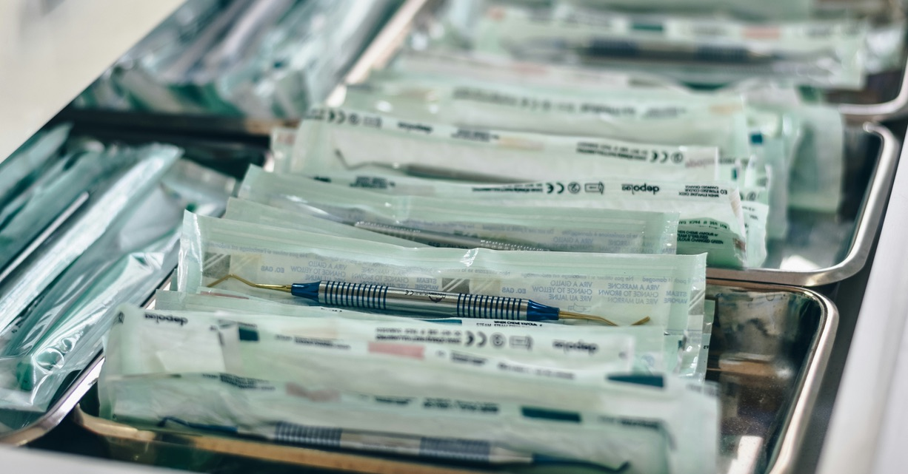
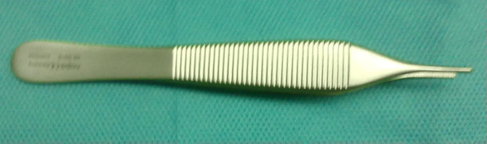

SHIFT LEAD
The Add-On Case
Prioritize an orthopedic tray, handle delays and keep the OR informed through final delivery.
Start shiftSTERILE PROCESSING SKILLS LAB
Make decisions in a simulated shift, inspect real instrument photos, and test your knowledge with quizzes and flashcards.
Choose a role and work through the decisions you’d face on the job.

SHIFT LEAD
Prioritize an orthopedic tray, handle delays and keep the OR informed through final delivery.
Start shift
ASSEMBLY TECHNICIAN
Identify instruments, inspect for visible soil, and reconcile a five-piece tray against the count sheet.
Start inspectionChoose a quiz in sterilization, prep and pack, or decontamination.
Try answering each question before opening the card.
Sterile Processing Department
Living thing, plant or animal; may be uincellular or malticellular
Functional center of a cell that governs activity and heredity
Solution containing special enzymes that dissolves proteinaceous materials
Chemical that kills most pathogenic organisms, but not all spores
Process of heat transfer by the circulation of currents form one area to another
Porcess using a chemical agent to render a product free of viable microorganisms
Heat transfer method in which heat is absorbed by an item's exterior surface and passed inward to the next layer
A method or technique that has consistently shown results superior to those achieve with other means
Typical method of bacterial reproduction in which a cell divides into two equal parts
Abbreviation for Association for the Advancement of Medical Instrumentation
Inspection of a sample from a larger lot to decide whether the lot should be accepted
Abbreviation for American Society of Healthcare Central Service Personnel
Abbreviation for the Latin "statim," meaning immediately or at once
Object that simulates a predetermined set of conditions when use to test sterilizing agents
An infectious protein particle that, unlike a virus, contains no nucleic acid, does not trigger an immune response and is not destroyed by extreme heat or cold
Questions, feedback, or interested in the Tech Spotlight? Send a note.